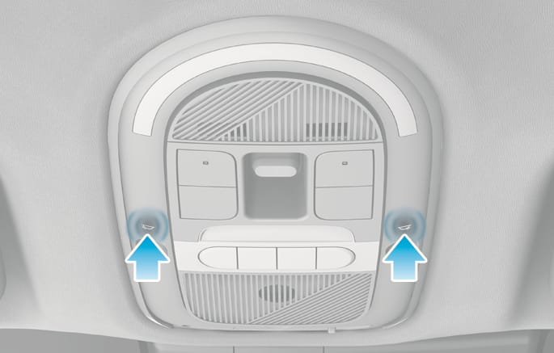
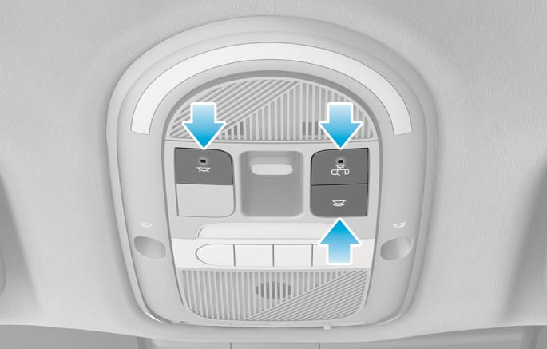

앞좌석
맵 램프

2C_MapLamp
운전석 또는 동승석 맵 램프의
룸 램프

2C_MapLamp_2
-
ĉ 스위치를 눌러 앞좌석, 뒷좌석 룸 램프를 켜거나 끌 수 있습니다. -
ć 스위치를 눌러 도어 연동을 설정하면 도어를 열 때 켜지고 도어를 닫을 때 꺼집니다. -
Ŭ 스위치를 눌러 무드 램프를 켜거나 끌 수 있습니다.(사양 적용 시)
-
스마트 키로 도어 잠금을 해제하면 룸 램프가 약 30초 동안 켜진 후 꺼집니다.
-
실내등이 켜진 상태로 시동을 걸거나 도어를 잠그면 룸 램프가 서서히 꺼집니다.
-
시동 'OFF' 또는 'ACC' 상태에서 도어를 열면 최대 5분 동안 룸 램프가 켜진 후 꺼집니다.